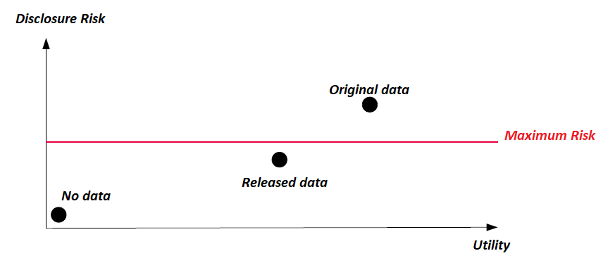
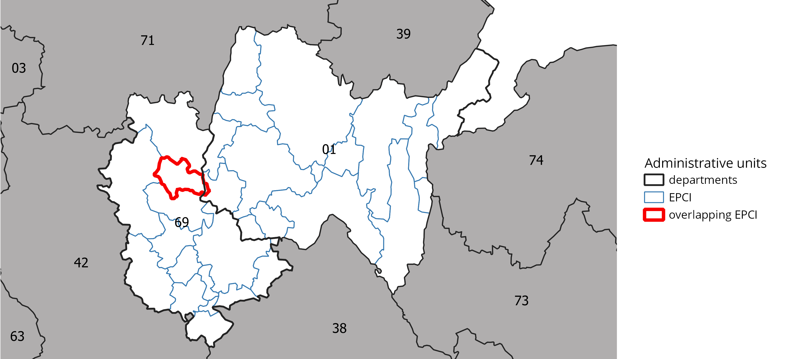
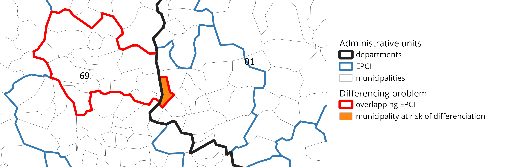

| Femmes | Hommes | |
|---|---|---|
| Diabétiques | 30 | 40 |
| Non diabétiques | 12 | 0 |
L’Arbitrage Risque/Utilité
Arbitrer pour mieux maîtriser
Sommaire
Introduction
Contexte
On se placera dans le contexte suivant:
- Un institut statistique collecte des données individuelles.
- On suppose qu’il respecte les réglements en vigueur en termes de protection des données individuelles (par exemple le RGPD en Europe).
- L’institut cherche à diffuser des statistiques agrégées ou des fichiers de données individuelles à visée statistique.
Problématique
Problématique de l’ensemble de l’atelier
Comment diffuser de l’information statistique sans porter atteinte aux personnes (physiques ou morales) auprès desquelles l’information a été collectée ?
Protéger: un enjeu pour la statistique publique
Les missions [de la statistique publique] ne dépendent pas seulement de sa capacité à maîtriser les outils ou les méthodes nécessaires à la production d’une information de qualité, mais aussi de sa capacité à protéger et à garantir la confidentialité des données qui lui sont confiées. Cette protection est la condition pour continuer à disposer de ces données. (Redor 2023)
A la recherche d’une définition
Une définition maximaliste de la divulgation…
T. Dalenius propose en 1977 la définition suivante:
“Si la publication des statistiques \(T(D)\) permet de déterminer la valeur de données statistiques confidentielles de façon plus précise qu’il ne serait possible sans accès à \(T(D)\), alors une divulgation a eu lieu.” (Dalenius 1977).
… impossible à tenir
Cette définition ne prend pas en compte l’information auxiliaire déjà disponible
Un exemple de divulgation impossible à protéger
Des études montrent un lien de corrélation entre le fait de fumer et la survenue d’un cancer des poumons \(\Rightarrow\) si, on (une compagnie d’assurance) sait qu’un individu est fumeur, alors on peut lui imputer un risque important d’avoir un cancer, information qui va très probablement générer un préjudice à cette personne.
A la recherche d’une définition
Il faut tenir compte de deux réalités:
- l’utilisateur dispose d’une information auxiliaire.
- l’inférence statistique est l’un des moyens de connaissances offertes par la publication de statistiques.
\(\Rightarrow\) une protection inconditionnelle et totale n’est pas possible.
Besoin de maîtriser les risques
La protection de données se définit à travers:
- la maîtrise des risques de divulgation
- et le besoin de continuer à diffuser de l’information statistique.
\(\Rightarrow\) Besoin d’arbitrer entre les deux composantes.
1 Un arbitrage nécessaire
Arbitrer
Protéger des données confidentielles, c’est arbitrer entre:
leur utilité pour la connaissance et le débat public;
leur risque intrinsèque: toute donnée diffusée peut divulguer une information sur un individu ou un groupe d’individus.
Deux écueils
Ne pas diffuser rendrait la statistique publique inutile.
Tout diffuser rendrait la statistique publique dangereuse.

Problèmes
- Quels sont les risques de divulgation ?
- Comment mesurer ces risques ?
- Comment les traiter ?
\(\Rightarrow\) Comment les traiter sans trop détériorer l’information statistique ?
Enjeu principal de l’arbitrage:
Trouver un équilibre entre protection et information
Il s’agit de réaliser un compromis entre le fait de minimiser les risques de divulgation des informations confidentielles et minimiser la perte d’information due aux traitements de protection des données.
Pas de méthode magique
Il n’existe pas de méthode minimisant le risque et la perte d’information en même temps!
Un exemple d’arbitrage
Le recensement de la population (RP) en France:
Décret de publication spécifique;
Utilité des données du RP très forte:
- un certain nombre de lois en dépendent
- dotation financière des communes
Risque d’utilisation des données diffusées contre les personnes est jugé faible:
- information peu préjudiciable
- à l’exception de variables sensibles
Un exemple de divulgation assumée
L’Insee diffuse des données communales même pour les très petites communes:
Voir l’exemple de la commune de Rochefourchat:
- Une commune de \(2\) habitants
- On connaît leur sexe, leur situation conjugale, leur âge, une description grossière de leurs logements, le statut d’occupation de leur logement, leur niveau de diplôme, leur statut d’activité, etc.
L’arbitrage Risque/Utilité: un paradigme
Il n’existe pas de risque zéro
Aucune méthode ne supprime totalement le risque \(\Rightarrow\)
Arbitrer est donc inhérent à la protection des données.
Cet arbitrage considéré comme le paradigme de la discipline.
Un paradigme criticable
(Voir Cox, Karr, et Kinney 2011)
S’il aide à savoir comment penser…
…il aide moins à savoir comment agir.
En pratique, un autre arbitrage a lieu
Un arbitrage Coûts/Bénéfices est réalisé:
- Par le producteur de données:
- Quels moyens déployer pour quel niveau de protection (temps, moyens financiers)?
- Par l’attaquant:
- L’information confidentielle espérée est-elle à la hauteur des moyens nécessaires à sa divulgation ?
\(\Longrightarrow\) Mettre en place des méthodes qui ont un coût adapté au risque objectivé et à la sensibilité des données.
Objectiver: définir et mesurer
Pour arbitrer, il faut pouvoir
Définir les termes de l’arbitrage
Mesurer les phénomènes.
2 Besoin d’une gouvernance
Gouvernance des données
Avant de définir les risques:
- Quels sont les objectifs de diffusion ?
- Qui accède à quoi avec quels droits ?
Objectif
Pour mieux maîtriser les risques, prendre conscience du contexte dans lequel ils sont susceptibles d’apparaître.
Sécuriser l’accès
On peut distinguer quatre grands types d’utilisateurs:
- grand public et acteurs publics: statistiques agrégées
- chercheurs: statistiques détaillées voire données individuelles
- chargés d’études de la statistique publique: données individuelles sans identifiants directs
- chargés de collecte: données individuelles avec identifiants
Adapter l’accès en fonction des besoins des utilisateurs
- Principe de minimisation : chaque utilisateur ne doit accéder qu’aux données strictement nécessaires à ses missions.
Adapter l’accès en fonction des besoins des utilisateurs
- Différenciation des accès :
- grand public et acteurs publics: accès gratuit et sans condition.
- chercheurs: accès sous conditions strictes (contrats, projets d’utilité publics, environnement sécurisé de travail, etc.).
- chargés d’études: accès à des données sur serveurs internes soumis à autorisation préalable.
- chargés de collecte: accès aux données de collecte pour la seule enquête sur laquelle ils travaillent.
Adapter l’accès en fonction des besoins des utilisateurs
- Assurer un suivi et un contrôle des accès : chaque accès doit pouvoir être contrôlé et révoqué si besoin.
Adapter le niveau d’anonymisation nécessaire
Plus l’accès est lâche, plus l’anonymisation doit pouvoir être élevé:
- grand public:
- libre accès \(\iff\) protection statistique forte
Adapter le niveau d’anonymisation nécessaire
Plus l’accès est lâche, plus l’anonymisation doit pouvoir être élevé:
- chercheurs et chargés d’études:
- accès sécurisé \(\iff\) protection statistique faible sur les inputs
- Mais besoin de traiter/vérifier les outputs publics (output checking)
Adapter le niveau d’anonymisation nécessaire
Plus l’accès est lâche, plus l’anonymisation doit pouvoir être élevé:
- chargés de collecte:
- accès très sécurisé \(\iff\) aucune protection statistique des données
- Mais nécessité de respecter les réglements sur la protection des données individuelles (RGPD en Europe).
Gouvernance, Déontologie, Confiance
- La maîtrise de la sécurité des accès et la meilleure gouvernance possible des données ne sont pas des boucliers infaillibles.
- Déontologie forte des statisticiens publics.
- Confiance dans les différents acteurs (chercheurs) à qui on donne accès aux données.
Responsabiliser
Une responsabilisation nécessaire:
- Statisticiens publics (en France loi de 1951 sur le secret statistique)
- Chercheurs (Risque de révocation des contrats et conséquences sur l’ensemble du laboratoire)
3 Définir le risque
Le risque de divulgation
Définition générale
Risque de divulguer une information confidentielle en publiant des données agrégées ou individuelles.
Quatre types de risque de divulgation
Risque de divulgation d’identité
Risque de divulgation d’attribut
Risque de divulgation par inférence
Risque de divulgation par différenciation
par "emboîtement"
par "recoupement"
Risque de divulgation d’identité
Définition
Risque de reconnaître un individu spécifique dans les données publiées : un attaquant peut identifier une unité à partir de la publication.
Exemples :
Certaines variables comme le nom, l’adresse qui identifient directement des individus ou des foyers.
Toutes les personnes ayant des caractéristiques très rares (ex : personnes très âgées).
87% de la population américaine est unique uniquement à partir du ZIP code, du genre et de la date de naissance (Sweeney 2000).
Remarques
Les identifiants directs (nom, prénom, adresse) sont utiles pour la collecte mais supprimés des bases à vocation statistique.
D’autres variables ont un fort pouvoir ré-identifiant (le lieu de résidence, l’âge, le genre, la profession, le niveau d’éducation, etc.).
Ré-identifier ne permet as toujours d’obtenir plus d’informations sur les personnes.
Risque de divulgation d’attribut
Définition
Risque de divulguer une information sensible sur un ou plusieurs individus à partir des données diffusées.
Exemples :
- Une ré-identification conduit souvent à une divulgation d’attribut.
- Il est possible de divulguer un attribut sur des groupes entiers.
Divulgation d’un attribut de groupe
- Divulgation d’une information sensible pour un groupe entier de personnes.
- Sans nécessairement avoir besoin de ré-identifier préalablement.
Risque de divulgation par inférence
Définition
Risque de pouvoir déduire avec une certitude élevée des informations sensibles sur des individus à partir des données publiées.
- Corrélation forte d’une information avec une caractéristique sensible.
- Proportion très élevée au sein d’un groupe.
| Femmes | Hommes | |
|---|---|---|
| Diabétiques | 30 | 38 |
| Non diabétiques | 12 | 2 |
Risque de divulgation par différenciation
Définition
Lorsqu’une information agrégée est diffusée pour divers croisements, il est parfois possible d’en déuire une information additionnelle en différenciant les divers résultats.
Exemples:
- Différenciation marginale: consiste à utiliser les marges de données tabulées
- Différenciation par emboîtement géographique: consiste à utiliser des agrégats diffusés sur des zonages emboîtés (variante du premier)
- Différenciation par recoupement: consiste à utiliser des agrégats diffusés sur des zonages imparfaitement emboîtés
Différenciation par recoupement

Différenciation par recoupement

4 Mesurer le risque
Distinguer les variables
Dans un jeu de données individuelles, on distinguera:
Identifiants: Variables permettant d’identifier directement un individu.
Quasi-identifiants: Variables pouvant conduire à réidentifier un individu à partir d’une information auxiliaire.
Variables sensibles: Variables pour lesquelles des mesures de protection spécifiques peuvent s’avérer nécessaires.
Autres variables
Les identifiants
Les identifiants sont retirés très tôt au cours du processus de production pour respecter les réglements sur la protection des données.
On supposera par la suite que tous les identifiants directs ont été retirées.
Les quasi-identifiants
Pour des données individus/ménages: sexe, âge, lieu d’habitation, diplôme, statut marital, etc.
Pour des données entreprises: Secteur d’activité, lieu du siège, etc.
Liste à déterminer à chaque fois
De quelles variables un attaquant dispose-t-il déjà ?
Un exemple
Identifiants
|
Quasi Id.
|
Sensible
|
|||
|---|---|---|---|---|---|
| Nom | Adresse | Commune | Age | Diplôme | Revenus |
| Johan | 3 rue... | Paris | 36 | Bac | 150000 |
| Jeanne | 11 bd... | Malakoff | 41 | Bac+3 | 60000 |
| Johnny | 12 pl... | Pithiviers | 23 | Bac Pro | 25000 |
| Jeannette | 8 rue... | Belval | 85 | 10000 | |
Quantifier le risque (1): le \(k\)-anonymat
Le \(k\)-anonymat (Sweeney 2002)
Un jeu de données est considéré comme k-anonyme si la combinaison la moins fréquente des modalités des variables quasi-identifiantes compte au moins k unités.
Cette mesure assure que tous les individus sont similaires à au moins \(k-1\) autres.
Mesure de risque globale qui se focalise sur les individus les plus à risque de ré-identification.
La probabilité associée au risque pour un individu du fichier d’être ré-identifié est au minimum \(1/k\)
Le scénario d’attaque envisagé
Caractéristiques du scénario d’attaque
Le \(k\)-anonymat protège les données d’une attaque de ré-identification lorsque l’attaquant dispose d’une information auxiliaire sur les mêmes individus:
- l’attaquant procède à un appariement entre les deux jeux de données
- les quasi-identifiants (QI) servent de clés d’appariement
- plus un individu a des caractéristiques rares sur les QI, meilleure sera la ré-identification.
- Les uniques sur les QI: la ré-identification sera certaine
- Plus un individu est commun, moins la probabilité de ré-identification sera élevée.
L’importance du scénario
Une efficacité qui dépend du réalisme du scénario
Assurer un certain niveau d’anonymité permet de réduire le risque de ré-identification, mais :
- Si l’attaquant dispose de plus d’information auxiliaire \(\Rightarrow\) sous-estimation du risque avec le \(k\)-anonymat.
- Avec le temps, l’attaquant peut disposer de plus d’informations. Or, le scénario est posé une fois \(\Rightarrow\) sous-estimation du risque avec le \(k\)-anonymat.
- Si l’attaquant dispose de moins d’information auxiliaire \(\Rightarrow\) sur-estimation du risque avec le \(k\)-anonymat.
- La qualité des appariements dépend de beaucoup d’autres facteurs (millésimes, qualité des variables, cohérence des champs, etc.) \(\Rightarrow\) sur-estimation du risque avec le \(k\)-anonymat.
Un exemple
| Id | Age | Genre | Maladie |
|---|---|---|---|
| 1 | [45;55[ | M | Diabète |
| 2 | [45;55[ | M | Hypertension artérielle |
| 3 | [45;55[ | F | Cancer |
| 4 | [45;55[ | F | Grippe |
| 5 | [70;75[ | M | Diabète |
| 6 | [45;55[ | M | Diabète |
Limites du \(k\)-anonymat
Forte dépendance à la qualité/véracité du scénario
\(\Rightarrow\) choix des QI est crucial.Ne réduit pas les risques de divulgation d’attributs sensibles.
Quantifier le risque (2): la l-diversité
La l-diversité
Elle s’assure d’une diversité suffisante des modalités d’une variable sensible prises par les individus au sein d’une même combinaison de quasi-identifiants.
Raffinement du \(k\)-anonymat.
Protection contre la divulgation d’attributs sensibles.
Un exemple
| Age | Sexe | Maladie |
|---|---|---|
| [50;55[ | H | Diabète |
| [50;55[ | H | Diabète |
| [50;55[ | F | Cancer |
| [50;55[ | F | Grippe |
| [50;55[ | H | Diabète |
Limites du \(k\)-anonymat
Ces mesures sont très répandues, faciles à comprendre et à mettre en place, mais elles ont aussi quelques limites:
L’efficacité dépend du scénario de divulgation :
Si l’intrus sait qu’un individu spécifique est dans l’ensemble de données, le \(\mathbf{k}\)-anonymat est une manière équitable d’évaluer le risque de ré-identification.
Si l’intrus essaie de faire correspondre les données publiées avec une base de données d’identification, l’évaluation des risques basée sur le \(\mathbf{k}\)-anonymat est conservatrice.
Le \(\mathbf{k}\)-anonymat ne prend pas en compte les poids d’échantillonnage.
\(\Rightarrow\) le \(k\)-anonymat appliqué à un échantillon sur-évaluera le risque de ré-identification.
5 Mesures probabilistes du risque
Mesures (naïves) du risque individuel
Probabilité de ré-identifier un individu d’une population: \(r_k = \frac{1}{N_k}\)
(\(N_k\) = nb d’individus partageant la même combinaison de clés \(k\)).Probabilité de ré-identifier un individu d’un échantillon:
Soit on raisonne au niveau de l’échantillon: \(r_k = \frac{1}{n_k}\)
(\(n_k\) = nb d’individus de l’échantillon partageant la même combinaison de clés \(k\)).Soit on raisonne au niveau de la population: \(r_k\) peut être estimé par \(\hat{r_k} = \frac{1}{\sum\limits_{i \in k}{w_i}}\),
où \(w_i\) est le poids de l’individu \(i\).
Mesures probabilistes du risque
Les individus les plus à risque:
Les uniques de population, quand \(N_k = 1\)
Les uniques dans l’échantillon, quand \(n_k = 1\)
Les uniques dans l’échantillon qui sont également uniques dans la population, quand \(\sum\limits_{i \in k}{w_i} = 1\)
Les mesures individuelles permettent de cibler les individus les plus à risque.
Les mesures globales sont utiles pour réaliser l’arbitrage.
- Par exemple, le risque individuel moyen \(\tau = \frac{\sum\limits_{k}{n_k \times r_k}}{n}\).
Mesures probabilistes du risque
Des mesures plus raffinées sont implémentées dans des outils classiques tels que \(\mu\)-Argus ou le package R sdcmicro.
Quand on dispose d’un échantillon (donc des \(n_k\)), on ne connaît en général pas les \(N_k\).
Mesure du risque individuel conditionnellement à l’échantillon: \(r_k = \mathbb{E}(\frac{1}{N_k}|n_k)\).
Mesure dépendant d’une modélisation de la loi (posterior) de \(N_k | n_k\)
Modélisation des fréquences des clés dans la population conditionnellement à leur fréquence dans l’échantillon.
Par une binomiale négative par exemple dans Benedetti et Franconi, 1998.
Autres mesures
Le Record Linkage:
Mesure a posteriori de la distance entre les individus du jeu protégé et ceux du jeu original.
Permet d’évaluer le nombre de correspondances exactes entre données perturbées et originales.
Les Outliers:
Fort risque de réidentification des individus ayant des valeurs en queue de distribution (par ex. les très hauts revenus des footballeurs)
Une perturbation n’est pas toujours suffisante (Un outlier perturbé reste souvent un outlier).
Détection des outliers à partir des quantiles de la distribution.
Définir un scénario d’attaque
Scénario d’attaque Définir des scénarios d’attaque c’est envisager les moyens utilisés par l’attaquant et objectiver les utilisations frauduleuses que nous chercherons à empêcher.
Arbitrage Coûts/Risques (INS)
Arbitrage Coûts/Bénéfices (Attaquant)
6 Objectiver la perte d’information (utilité)
Perte d’information
Comment la définir ? Les utilisateurs
Pas de définition de la perte d’information sans connaître la gamme envisagée des utilisateurs des données
En fonction des utilisateurs finaux, le concept de perte d’information peut changer
Il n’est pas recommandé de publier plusieurs versions protégées du même jeu de données pour chaque type d’utilisateur \(\longrightarrow\) risques de divulgation importants par différenciation.
Perte d’information
Comment la définir ? Idée principale
Deux moyens pour mesurer la perte d’information :
Comparer les enregistrements bruts entre le jeu de données original et le jeu de données protégé
Comparer certaines statistiques calculées sur les jeux de données originaux et protégés
Perte d’information
Données continues Pour les données continues, formellement :
\(I_1,\dots, I_n\), \(n\) enregistrements individuels
\(Z_1,..,Z_p\), \(p\) données continues
\(X\) la matrice de données originale, \(X^{'}\) la matrice de données protégée
Perte d’information
Données continues, distance entre matrices
- Erreur quadratique moyenne : somme des différences au carré, composante par composante entre 2 matrices, divisée par le nombre de coefficients de chaque matrice : \[\frac{1}{np}\sum_{j=1}^p\sum_{i=1}^n(x_{ij}-x^{'}_{ij})^2\]
Perte d’informationDonnées continues, distance entre matrices
- Erreur absolue moyenne : somme des différences absolues, composante par composante entre 2 matrices, divisée par le nombre de coefficients de chaque matrice \[\frac{1}{np}\sum_{j=1}^p\sum_{i=1}^n|x_{ij}-x^{'}_{ij}|\]
Perte d’informationDonnées continues, distance entre matrices
- Variation moyenne : somme des variations absolues en pourcentage des composantes de la matrice protégée par rapport à la matrice de données originale \[\frac{1}{np}\sum_{j=1}^p\sum_{i=1}^n\frac{|x_{ij}-x^{'}_{ij}|}{|x_{ij}|}\]
Perte d’information
Un exemple
- \(X\) en haut, \(X^{'}\) en bas, les données perturbées
| Sexe | Région | Âge | heures travaillées |
| par semaine | |||
| F | 92 | 36 | 17 |
| M | 75 | 41 | 35 |
| F | 75 | 52 | 5 |
| Sexe | Région | Âge | heures travaillées |
| par semaine | |||
| F | 92 | 34 | 23 |
| F | 75 | 48 | 35 |
| M | 75 | 58 | 2 |
Perte d’information
Un exemple
Erreur quadratique moyenne = \(\frac{1}{np}\sum_{j=1}^p\sum_{i=1}^n(x_{ij}-x^{'}_{ij})^2=\frac{(36-34)^2+(41-48)^2+(52-58)^2+(17-23)^2+(35-35)^2+(5-2)^2}{6}=\frac{4+49+36+36+9}{6}=22\)
Erreur absolue moyenne = \(\frac{1}{np}\sum_{j=1}^p\sum_{i=1}^n|x_{ij}-x^{'}_{ij}|=\frac{|36-34|+|41-48|+|52-58|+|17-23|+|35-35|+|5-2|}{6}=\frac{2+7+6+6+0+3}{6}=\frac{24}{6}=4\)
Variation moyenne = \(\frac{1}{np}\sum_{j=1}^p\sum_{i=1}^n\frac{|x_{ij}-x^{'}_{ij}|}{|x_{ij}|}=\frac{\frac{|36-34|}{36}+\frac{|41-48|}{41}+\frac{|52-58|}{52}+\frac{|17-23|}{17}+\frac{|35-35|}{35}+\frac{|5-2|}{5}}{6}=\frac{\frac{2}{36}+\frac{7}{41}+\frac{6}{52}+\frac{6}{17}+\frac{0}{35}+\frac{3}{5}}{6}=0.15\)
Perte d’information
- Les petites valeurs de \(x_{ij}\) peuvent entraîner une instabilité lors du calcul de la variation moyenne \(\longrightarrow\) pour éviter cela, la solution est la formulation : \[\frac{1}{np}\sum_{j=1}^p\sum_{i=1}^n\frac{|x_{ij}-x^{'}_{ij}|}{\sqrt{2}S_j}\] avec \(S_j\) l’écart type de la \(j\)-ème variable
Perte d’information
Données continues
Mesures spécifiques:
Comparaisons univariées (comparaison de la distribution d’une variable avant et après perturbation).
Comparaisons bivariées: Corrélations linéaires par exemple.
Comparaison multivariées: Comparaison des plans d’une analyse en composante principale.
Comparaison des paramètres d’une régression, etc.
Données catégorielles
Pour les variables catégorielles, 3 idées principales pour évaluer la perte d’information avec des données catégorielles :
Comparaison directe des valeurs des variables
Écarts absolus moyens
Comparaison des tables de contingence
Mesures basées sur l’entropie
Mesure basée sur l’entropie
L’entropie mesure l’incertitude induite par une distribution de probabilité donnée : \[H(V/V^{'}=j) = - \sum_{i=1}^K P(V=i|V^{'} = j) \log(P(V=i|V^{'} = j))\]
Selon la méthode, il peut être difficile d’évaluer la quantité \(P(V=i|V^{'} = j)\)
Risque global \[R = \sum_{r \in enregistrements} H(V/V^{'}=\underset{valeur protégée}{\underbrace{j_{r}}})\]
Perte d’information
- \(K = 5\) catégories, soit \(j = 4\), et examinons \(P(V=i|V^{'} = 4)_{1\leq i\leq 5}\)
0.30

0.30

0.30

- \(\longrightarrow\) Compromis entre risque et perte d’information !
Visualisation
De nombreux moyens de visualisation de la perte d’information:
Univarié: histogrammes, boîtes à moustaches, diagrammes en barres
Bivarié: Matrices de corrélations, Diagrammes en mosaïques, Plan d’une analyse factorielle des correspondances, etc.
Multivarié: 1er plan d’une analyse factorielle (ACP, ACM, AFDM)
Visualisation
Matrice de corrélations dans les données originales et différences observées après perturbation selon deux méthodes différentes:
0.30

0.30

0.30

Visualisation
Matrice de corrélations dans les données originales et différences observées après perturbation selon deux méthodes différentes:
0.48

0.48

Données tabulées
Pour les variables catégorielles, 3 idées principales pour évaluer la perte d’information avec des données catégorielles :
Mesures globales
Écarts absolus moyens
Distance de Hellinger
\[HD(\mathbf{X}, \mathbf{X}') = \frac{1}{\sqrt{2}} \sqrt{\sum_{j = 1}^M \left(\sqrt{\frac{x'_j}{\sum_{j=1}^M x'_j}} - \sqrt{\frac{x_j}{\sum_{j=1}^M x_j}}\right)^2}\]
Pour Tableau de contingence:
Comparaison des V de Cramer (basée sur la statistique du \(\chi^2\)
Comparaison du 1er plan factoriel d’une analyse factorielle des correspondances.
7 Une démarche en plusieurs étapes
Étapes clés du processus de protection des données
Une démarche reprise de (Hundepool et al. 2010):
Est-il nécessaire de protéger les données ?
Quelles sont les caractéristiques et utilisations principales des données ?
Définition et mesure des risques de divulgation
Choix des méthodes de protection des données
Mise en oeuvre des méthodes
8 Étape 1
Est-il nécessaire de protéger les données ?
Analyse des unités considérées et variables présentes dans le fichier de microdonnées, si elles ne sont pas sensibles pas besoin d’effectuer de traitement pour la protection des données
Quel type de diffusion ? (tableaux de données, cartes, microdonnées ...)
9 Étape 2
Quelles sont les caractéristiques et utilisations principales des données ? (I)
Analyse du type et de la structure des données pour déterminer les variables / unités qui nécessitent une protection
Analyse de la méthodologie de l’enquête
Définition des objectifs de l’institut : type de publication (PUF, MFR), politiques de diffusion, cohérence entre plusieurs diffusions simultanées, cohérence avec ce qui est déjà publié
10 Étape 2
Quelles sont les caractéristiques et utilisations principales des données ? (II)
Analyse des besoins des utilisateurs (variables prioritaires, types d’analyses qui seront réalisées)
Analyse du questionnaire pour les enquêtes (variables à retirer / à inclure, quel niveau de détail pour les indicateurs structurels telles que les variables socio-démographique ?)
11 Étape 3
Définition et mesure des risques de divulgation
Recenser les différents scénarios possibles conduisant à la divulgation des données
Ces scénarios dépendent du type de données considérées (données exhaustives, enquêtes) et de la diffusion choisie (pour les chercheurs ou le grand public)
Choisir la ou les méthodes pour mesurer le risque de divulgation (développé dans la partie "Les différents types de risques")
Si on considère que le risque de divulgation est trop élevé alors il faut mettre en place des méthodes de protection des données
12 Étape 4
Choix des méthodes de protection des données
Choisir une / plusieurs méthode(s) de protection pour réduire les risques de divulgation au seuil de tolérance qu’on s’est fixé
Le choix de la méthode dépend de l’impact sur l’utilité des données de ladite méthode
Analyse de perte d’utilité due à la protection
13 Étape 5
Mise en oeuvre des méthodes
Choisir un logiciel
Réaliser la mesure des risques de divulgation
Protéger les données
Quantification de l’information perdue
Contrôle du processus de protection
- vérifier que les méthodes mises en oeuvre ont bien permis de réduire le risque de divulgation au niveau considéré comme acceptable
Réalisation d’un document synthétisant les méthodes de protection utilisées et faisant le bilan de l’information perdue
si possible le transmettre aux utilisateurs des données publiées
peut contenir des avertissements sur les précautions à prendre lors de l’utilisation d’un fichier anonymisé
EN guise de conclusion
Il existe de nombreuses façons d’évaluer la perte d’information.
Fortement liée au niveau de protection.
De nombreuses méthodes pour évaluer la perte d’information, le choix de la mesure dépend entièrement des utilisateurs finaux des données publiées.
Difficile d’anticiper toutes les utilisations d’un ensemble de données et donc toutes les mesures associées de perte d’information.
Nécessité de faire des concessions sur certaines caractéristiques d’un tableau pour libérer des contraintes ailleurs.
On ne peut pas préserver toutes les caractéristiques d’un ensemble de données.
14 Pour aller plus loin
Source généraliste
Hundepool and alt., Handbook on Statistical Disclosure Control, Wiley, 2012
Une version libre et gratuite est disponible ici: https://ec.europa.eu/eurostat/cros/system/files/SDC_Handbook.pdf (2010)
Risques de divulgation
Sweeney, L. (2000). Simple demographics often identify people uniquely. Health (San Francisco), 671(2000), 1-34.
El Emam, K., & Dankar, F. K. (2008). Protecting privacy using k-anonymity. Journal of the American Medical Informatics Association, 15(5), 627-637.
Compromis entre Risque et Utilité:
- Domingo-Ferrer, J., Mateo-Sanz, J. M., & Torra, V. (2001, May). Comparing SDC methods for microdata on the basis of information loss and disclosure risk. In Pre-proceedings of ETK-NTTS (Vol. 2, pp. 807-826).
Cox, Lawrence H., Alan F. Karr, et Satkartar K. Kinney. 2011. « Risk-Utility Paradigms for Statistical Disclosure Limitation: How to Think, But Not How to Act: Risk-Utility Paradigms for SDL ». International Statistical Review 79 (2): 160‑83. https://doi.org/10.1111/j.1751-5823.2011.00140.x.
Dalenius, Tore. 1977. « Privacy transformations for statistical information systems ». Journal of Statistical Planning and Inference 1 (1): 73‑86. https://doi.org/10.1016/0378-3758(77)90007-6.
Redor, Patrick. 2023. « Confidentialité des données statistiques : un enjeu majeur pour le service statistique public ». Courrier des Statistiques, nᵒ 9: 46‑64. https://www.insee.fr/fr/information/7635823?sommaire=7635842.
Sweeney, Latanya. 2000. « Simple Demographics Often Identify People Uniquely. » Carnegie Mellon University, Data Privacy Working Paper 3.
———. 2002. « k-ANONYMITY: A MODEL FOR PROTECTING PRIVACY ». International Journal of Uncertainty, Fuzziness and Knowledge-Based Systems 10 (05): 557‑70. https://doi.org/10.1142/S0218488502001648.
L’arbitrage risque/utilité
Comment la définir ?
Comment la définir ?
0.49
0.49
risque = 100 % , Perte d’info = 0 risque = 0 % , Perte d’info = 100 %